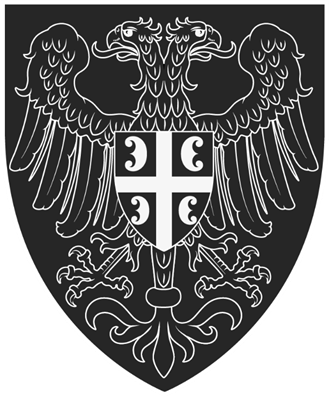
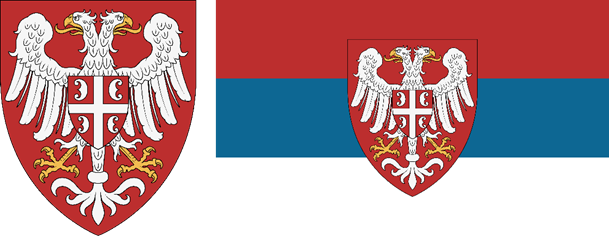
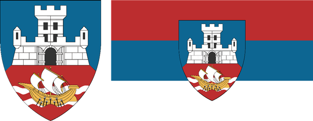
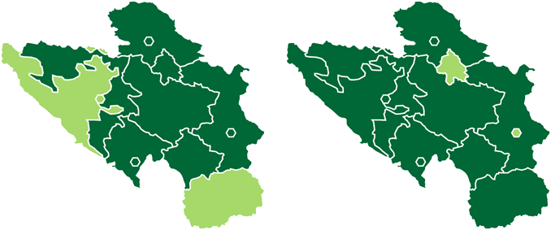

Члан 1.1Право гласа
Сви грађани Републике Србије имају право да бирају и буду бирани, да неометано обављају економске активности, и да изражавају своје мишљење.

РЕПУБЛИКЕ СРБИЈЕ
У име уједињења, помирења, и очувања заједнице. Српски играчи свесни своје одговорности према својим саиграчима, и својим регијама, непоколебљиви у свом циљу да обнове и очувају демократију, грађанске слободе, и независност земље усвајају следећи Устав:
Сви грађани Републике Србије имају право да бирају и буду бирани, да неометано обављају економске активности, и да изражавају своје мишљење.
Сви грађани Републике Србије имају право да буду саслушани и третирани са поштовањем од стране државних органа.
Сви грађани Републике Србије имају право да посматрају рад државних органа и буду информисани о одлукама истих.
Сви грађани Републике Србије обавезују се на одбрану Републике Србије у случају рата, револуције, или пуча.
Сви грађани Републике Србије обавезују се на поштено учешће у демократском процесу, на суздржавање од гласања са више од два налога унутар игре, и са више од једног у Сенату.
Република Србија подстиче своје грађане на развијање и очување државе и матичних региона редовним грађењем војних академија, радом у одељењима, чишћењем загађености, и донирањем ресурса зарад дизања индекса.
Грб Републике Србије јесте сребрни двоглави орао у полету, на црвеном пољу стандардног хералдичког штита. Двоглави орао на грудима носи мањи црвени штит који је сребрним крстом подељен на четири поља, на сваком од четири поља налази се по једно грчко слово бета.
Застава Републике Србије јесте хоризонтална црвено-плаво-бела тробојка размера 5:3. На застави, центриран по ширини и висини налази се грб Републике Србије.

Грб Управе Градова (бафер државе) јесте грб града Београда стилистички прилагођен стандардном хералдичком штиту.
Застава Управе Градова (бафер државе) јесте хоризонтална црвено-плаво-бела тробојка размера 5:3. На застави, центриран по ширини и висини налази се грб Управе Градова.

Грбови су у дигиталном облику величине 1650×2000 пиксела, ту величину задржавају на заставама чија је величина 5000×3000 пиксела. И грбови и заставе користе стандардну хералдичку палету боја. Кодови боја коришћених на грбовима и заставама су следећи: плава (#0d6793), црвена (#bc2e2e), сребрна (#f6f6f6), златна (#f2bc51).
Република Србија је, по систему унутар игре, председничка република. Председник (и командант), министар економије, и министар спољних послова представљају извршну власт. Парламент, и Сенат као његова продужена рука, представљају законодавну и, по потреби, судску власт.
Председник Републике Србије бира се на непосредним изборима. Мандат председника је краткорочан и траје 5 дана. Играч који се кандидује за председника мора се кандидовати са главног налога. Председник:
Вршење дужности министра економије обавља угледан и активан играч добро упознат са механикама игрице. Играч може вршити функцију министра економије и са главног, и са дуплог налога. Министар економије:
Вршење дужности министра спољних послова обавља угледан и активан играч добро упознат са механикама игрице. Играч може вршити функцију министра спољних послова и са главног, и са дуплог налога. Министар спољних послова:
Парламент је тело одређено функцијама игре, издваја се као посебно због могућности мањих, или злонамерних, странки да учествују преко посланика. Састав парламента бира се на непосредним изборима сваких 10 дана.
Сви играчи чији су налози у скупштини дужни су да буду активни како би предложени закони били изгласани у најкраћем могућем року.
Сенат Републике Србије представља њено главно законодавно тело и највећи ауторитет у држави. Сенат организује председник републике на Телеграму после сваких избора у игри.
Сенат сачињава по два посланика из сваке политичке странке или коалиције која је прикупила више од 20% гласова на изборима. Сенатори могу да служе неограничен број мандата, али је ротација пожељна. Сенатори су дужни да обезбеде да чланови њихове странке у парламенту унутар игре гласају у складу са одлуком сената. Председник не може истовремено бити и сенатор.
Сенат доноси законе простом већином, под условом да сенатори који су гласали за предлог представљају више од половине укупног броја посланика у скупштини. Овим актом спречава се и могућност једне веће странке да манипулише демократским процесом, али и могућност да мање странке наметну своју вољу већини.
Сенат може да распише референдум када утврди да је то решење пожељно, или када је у питању важна одлука у којој сваки грађанин треба да се определи. Референдум се одржава као анкета на телеграм групи сената са одређеним временом трајања.
Сенат оперише у јавној групи која је доступна свим играчима, у њој се на посебним каналима одржавају седнице, постављају обавештења, чува примерак устава, и одржавају референдуми.
Република Србија има своју бафер државу која постоји како би се спречило прављење дуплих налога и тиме утицало на демократски процес, и како би се маневрисало у случају рата. Бафер држава је, по дефиницији диктатура.
Бафер државу може да води одређена политичка странка или појединац од поверења, било какве промене у управљању бафер државом доносе се гласањем у сенату.
Унутар Републике Србије дозвољено је формирање малих и великих аутономија. Право да постане гувернер има било који активан и одговоран играч, који може, а не мора да аутономију води у име своје политичке странке. Гувернери су дужни да регије које добију на управљање одржавају и развијају. Кандидатура се подноси сенаторима који је прослеђују на гласање.
Подстичу се играчи да не гласају на изборима за парламент аутономије јер исти могу да ометају или успоре рад гувернера. Намерна саботажа рада гувернера биће санкционисана.
Подстичу се странке са страним играчима да исте суздрже од гласања на изборима и референдумима, али им се дозвољава кандидатура за гувернера. Странци који не познају српски језик нису способни да у потпуности схвате сва дешавања у држави.
Сенат може страним играчима, уколико поднесу захтев, да додели статус пуноправног грађанина и одобри им гласање на изборима и референдумима, предуслов јесте да се покажу активни и одани држави.
Одлуком сената могу да се уведу санкције појединим играчима који на разне начине саботирају нормално функционисање Републике Србије, или отворено ратују против ње. Постоји два степена санкција које Сенат може да изда:
Сенат може да таргетира регионе у којем се налазе санкционисани играчи, или злонамерне странке, тако што ће је привремено пребацити у бафер или повећати порезе.
Република Србија чланица је геополитичког блока за који се њени грађани определе, она учествује у ратовима и иницијативама које блок покреће.
Република Србија подстиче своје грађане да ратују на страни њеног блока у ратовима, револуцијама, и пучевима.
Обзиром да се министар спољних послова мења на недељном нивоу, пожељно је да Сенат одреди представнике који ће бити у контакту са руководством блока и преносити вести Сенату и грађанима.
Република Србија подстиче српске играче који играју у страним заједницама или раде као плаћеници да се врате у земљу. Без обзира на то шта се одлуче, добродошли су да изразе своје мишљење и надгледају рад Сената.
Република Србија подржава и помаже напоре угледних чланова заједнице да успоставе и одрже своје сопствене државе. Ова помоћ остварује се у виду гласања током колонизације и помоћи у дипломатским односима.
Република Србија може, уз одобрење Сената, да пребаци део свог буџета или прикупи новац преко појединачних донација како би помогла српским државама да одрже границе или развију регионе. Овај вид помоћи може бити повратан или неповратан у зависности од одлуке сената.
Вредност пружене помоћи руководство државе требало би да врати Републици Србији оног момента када се финансијски осигура. Сенат може, под условом да се сви сенатори сложе, да опрости део помоћи или целокупну пружену помоћ. Забрањено је стављање камате на повратну помоћ.
У случају да се Република Србија као чланица свог блока нађе у рату са блоком друге српске државе, суздржаће се од отварања фронтова и ратовања против исте, уколико…
Република Србија има своје матичне регионе, они подразумевају регионе у којима, ван игре, Срби сачињавају етничку већину, или значајну мањину.
Матични региони Републике Србије подразумевају: Београд, Нови Сад, Ниш, Подгорицу, Косово и Метохију, Јужну и Источну Србију, Западну Србију, Војводину, Црну Гору, и Републику Српску.
Република Србија има своје регионе под старатељством, они подразумевају све регионе који су, ван игре, били део Југославије, а немају активне заједнице, те их српска заједница присваја и одржава.
Региони под старатељством су: Континентална Хрватска, Хрватско Приморје, Источна Словенија, Западна Словенија, Федерација Босне и Херцеговине, Сарајево, и Македонија.
Окупирани региони, јесу сви они региони којима управља Република Србија, а заузела их је ратом, трговином, или на друге начине.

Матични региони Републике Србије јесу најважнији по заједницу, и било каква трговина, или чак предаја истих строго се забрањује.
Региони под старатељством идеално би требали да остану у саставу Републике Србије, међутим, уколико региони постану скупи за одржавање, или је корист од њихове продаје знатно велика, држава може да их прода. Поводом продаје регије под старатељством мора да се распише референдум.
Региони под окупацијом биће третирани на начин на који државни органи одлуче, они могу бити продати зарад профита, или пак остављени у саставу Србије уколико је заједници потребна та регија. Поводом продаје регије под окупацијом сазива се седница Сената.
Одређени део српских региона, а засигурно Београд као место где игра региструје нове налоге, ће бити под контролом бафер државе. Количина региона у баферу зависи од околности у којима се држава налази. Тренутно су у баферу Београд и Ниш.
Ванредно стање уводи Сенат у случају рата, тероризма или било какве озбиљније претње по опстанак и уређење државе.
Током ванредног стања затварају се границе и допушта се председнику да по потреби мења министре, уколико је у моменту потребан неко активан.
Уколико се прогласи ванредно стање, могуће је отићи корак даље и прогласити привремену диктатуру, која ће у почетку трајати недељу дана и после по потреби бити продужавана по недељу дана, уколико Сенат одлучи да је то потребно.
Улогу диктатора може да преузме тренутни председник, или погоднији играч који ће бити активан и/или искуснији, у оба случаја Сенат мора да потврди кандидатуру гласањем.
По обустави непријатељстава, и потврде од Сената да нема даље претње, диктатор је у обавези да се повуче и распише изборе. У случају да одбије, и покуша да утврди своју позицију уз помоћ страних и/или домаћих фактора српским играчима биће грађанска дужност да га силом смене, и врате демократско уређење.
Уколико се непријатељства наставе у виду организованог терора, границе остају затворене и раде се ротације револуција.
Подвргнути санкцијама биће сви играчи који ометају нормалан рад државних органа и аутономија, или пак отворено ратују против Републике Србије у ратовима, револуцијама, и пучевима.
Подвргнути санкцијама биће сви играчи који коришћењем великог броја дуплих налога покушају преузети државне институције унутар игре.
Подвргнути санкцијама биће сви играчи који изврше финансијску превару других играча.
Подвргнути санкцијама биће сви играчи који искористе своју позицију за крађу из државног буџета или превару других играча.
Подвргнути санкцијама биће сви играчи који масовно пусте дупле налоге, или странце, у земљу са циљем преузимања или уништења државе.
Подвргнути санкцијама биће сви играчи који на своју руку продају или предају регионе Републике Србије.
Подвргнути санкцијама биће сви играчи који искористе своју позицију команданта или диктатора како би објавили безразложни рат.
Подвргнути санкцијама биће сви играчи који искористе своју позицију председника како би напустили геополитички блок без одобрења Сената или референдума.
Подвргнути санкцијама биће сви играчи који искористе своју позицију како би без валидног разлога увели санкције другим играчима.
Примењене санкције се не могу укинути док не прође најмање месец дана од санкционисања. Укидање санкција утврђује Сенат.
Примењене санкције, које се односе на финансијске преваре, се не могу укинути док не прође најмање месец дана од санкционисања, и субјект санкција не надокнади нанесену штету у новцу, или по тренутној тржишној вредности ресурса ако су исти у питању.
Примењене санкције, које се односе на злоупотребу позиције, се не могу укинути без референдума који ће њихово укидање утврдити. Уколико је позиција злоупотребљена у сврхе финансијске преваре субјект санкција мора да их надокнади како је наведено у члану 8.2.
Примењене санкције, које се односе на злоупотребу позиције зарад уништења или присвајања државе, се не могу укинути.
Устав Републике Србије њен је највиши правни документи и највећим делом сачињен је од пређашњих и тренутних искустава српске државе, као такав константно бива отворен за унапређења и дораде.
Уставни судија има за дужност да чува примерак устава, бележник о изменама, и ревидира предложене измене како би се избегле манипулације уставом у корист тренутне већине у Сенату.
Као први уставни судија служи његов творац, који дужност може да пренесе на другог играча уз одобрење целог састава сената. Позицију уставног судије мора да обавља особа од поверења, неутрална, и одана принципима демократије.
Како би се додао или изменио чланак или глава устава потребна је потврда од Сената, она се касније прослеђује уставном судији, који предлог усваја, одбија, или враћа на разматрање.